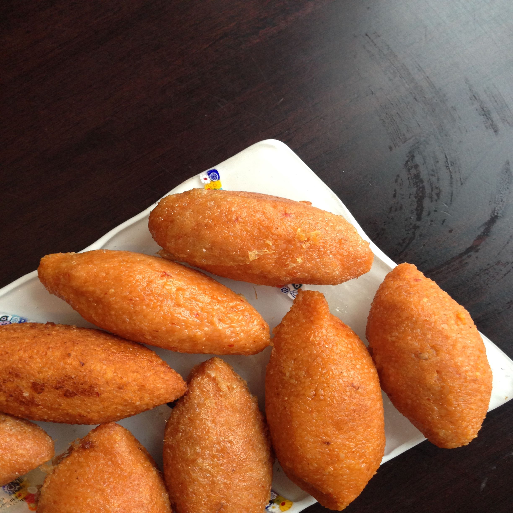
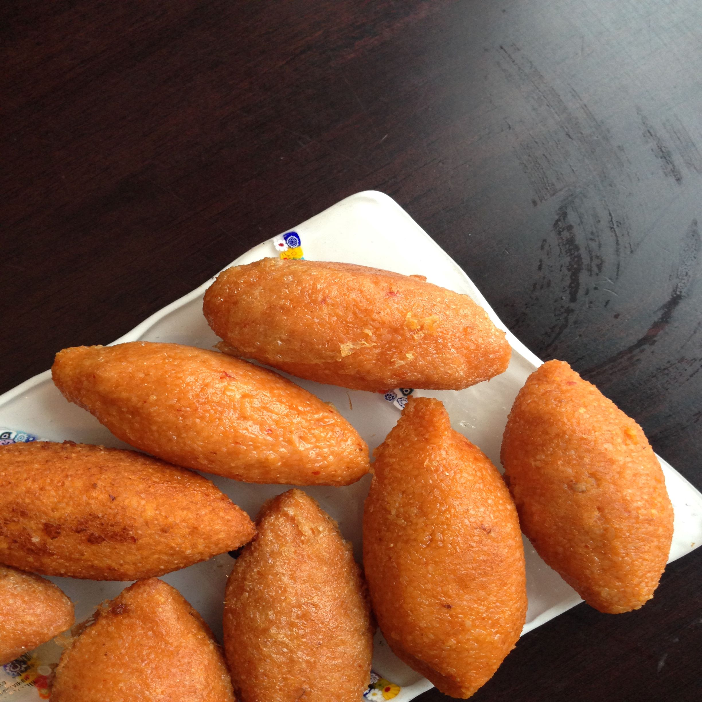

turkish Kebbah
The Turkish kibbeh, or as it is also called the chi kofta, is one of the most important and famous fast foods that the Turks eat during their day, as it has special shops that sell it in the form of a sandwich.
The Turkish kibbeh, or as it is also called the chi kofta, is one of the most important and famous fast foods that the Turks eat during their day, as it has special shops that sell it in the form of a sandwich.
